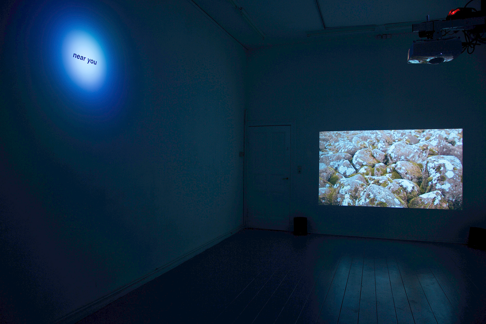
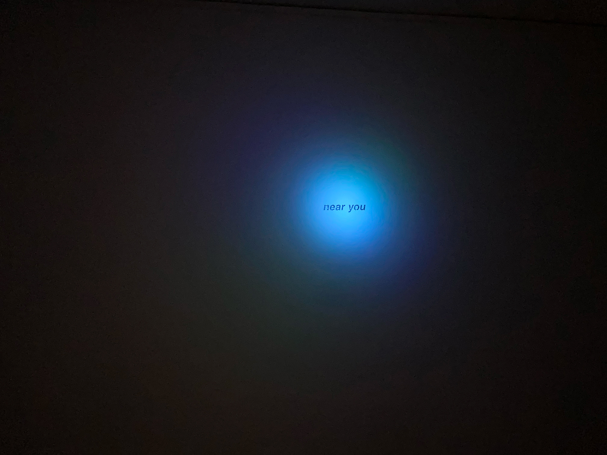

Near You, 2025, vinyle, lumière à faisceau concentrée programmée, dimensions variable

Solaire, 2022, video, sound, 15:30 min.


Aubes, 2021/24, video, sound, 15:30 min.

We Killed Seasons (Part 2), 2025, video, sound, 3:10 min.

Sans titre (with cloud), 2024, video, sound, 2:40 min.



Vues d'exposition individuelle SPOTLIGHTS à HilbertRaum, Berlin- Clemens Wilhelm
Crédits photos: Clemens Wihelm